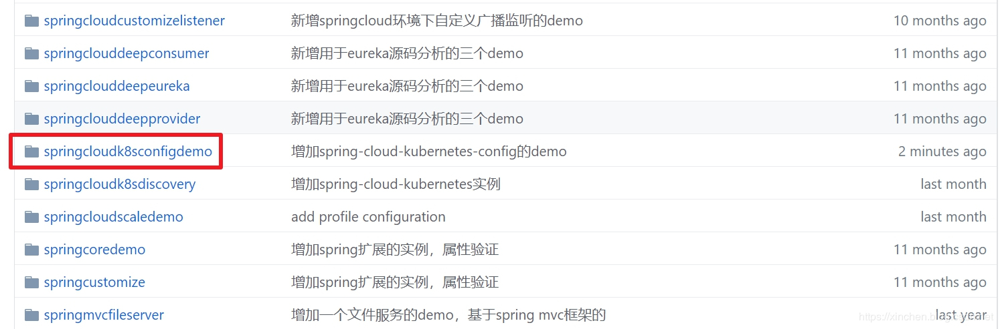

原文连接:https://www.cnblogs.com/bolingcavalry/p/11470960.html
本文是《spring-cloud-kubernetes实战系列》的第六篇，主要内容是在kubernetes上部署一个java web应用，该应用使用了spring-cloud-kubernetes框架，可以使用kubernetes的configmap；
系列文章列表
- 《spring-cloud-kubernetes官方demo运行实战》
- 《你好spring-cloud-kubernetes》
- 《spring-cloud-kubernetes背后的三个关键知识点》
- 《spring-cloud-kubernetes的服务发现和轮询实战(含熔断)》
- 《spring-cloud-kubernetes与SpringCloud Gateway》
- 《spring-cloud-kubernetes与k8s的configmap》
- 《spring-cloud-kubernetes自动同步k8s的configmap更新》
关于SpringCloud Config
如果您开发过SpringCloud应用，相信您对SpringCloud Config不会陌生，在微服务环境中，业务应用可以从config server获取所需的配置信息，如下图所示：
关于kubernetes的configmap
这是kubernetes提供的基本服务之一，创建一个configmap资源，对应着一份配置文件，可以将该资源通过数据卷的形式映射到Pod上，这样Pod就能用上这个配置文件了，如下图：
spring-cloud-kubernetes带来的礼物
spring-cloud-starter-kubernetes-config是spring-cloud-starter-kubernetes框架下的一个库，作用是将kubernetes的configmap与SpringCloud Config结合起来，通过spring-cloud-starter-kubernetes-config，我们的应用就像在通过SpringCloud Config取得配置信息，只不过这里的配置信息来自kubernetes的configmap，而不是SpringCloud Config server，如下图所示：
理论上的准备工作已经差不多了，接下来通过实战来展示spring-cloud-starter-kubernetes-config的神奇之处；
源码下载
如果您不打算写代码，也可以从GitHub上下载本次实战的源码，地址和链接信息如下表所示：
| 名称 | 链接 | 备注 |
|---|---|---|
| 项目主页 | https://github.com/zq2599/blog_demos | 该项目在GitHub上的主页 |
| git仓库地址(https) | https://github.com/zq2599/blog_demos.git | 该项目源码的仓库地址，https协议 |
| git仓库地址(ssh) | git@github.com:zq2599/blog_demos.git | 该项目源码的仓库地址，ssh协议 |
这个git项目中有多个文件夹，本章的应用在springcloudk8sconfigdemo文件夹下，如下图所示：

环境信息
本次实战的环境和版本信息如下：
- 操作系统：CentOS Linux release 7.6.1810
- minikube：1.1.1
- Java：1.8.0_191
- Maven：3.6.0
- fabric8-maven-plugin插件：3.5.37
- spring-cloud-kubernetes：1.0.1.RELEASE
- springboot：2.1.6.RELEASE
准备完毕，可以开始实战啦！
编码
- 通过maven创建名为springcloudk8sconfigdemo的springboot工程，pom.xml内容如下，要注意的是新增了依赖spring-cloud-starter-kubernetes-config，这是本次实战的重点：
<?xml version="1.0" encoding="UTF-8"?>
<project xmlns="http://maven.apache.org/POM/4.0.0" xmlns:xsi="http://www.w3.org/2001/XMLSchema-instance"
xsi:schemaLocation="http://maven.apache.org/POM/4.0.0 http://maven.apache.org/xsd/maven-4.0.0.xsd">
<modelVersion>4.0.0</modelVersion>
<parent>
<groupId>org.springframework.boot</groupId>
<artifactId>spring-boot-starter-parent</artifactId>
<version>2.1.6.RELEASE</version>
<relativePath/> <!-- lookup parent from repository -->
</parent>
<groupId>com.bolingcavalry</groupId>
<artifactId>springcloudk8sconfigdemo</artifactId>
<version>0.0.1-SNAPSHOT</version>
<name>springcloudk8sconfigdemo</name>
<description>Demo project for Spring Boot</description>
<properties>
<java.version>1.8</java.version>
<spring-boot.version>2.1.6.RELEASE</spring-boot.version>
<maven-checkstyle-plugin.failsOnError>false</maven-checkstyle-plugin.failsOnError>
<maven-checkstyle-plugin.failsOnViolation>false</maven-checkstyle-plugin.failsOnViolation>
<maven-checkstyle-plugin.includeTestSourceDirectory>false</maven-checkstyle-plugin.includeTestSourceDirectory>
<maven-compiler-plugin.version>3.5</maven-compiler-plugin.version>
<maven-deploy-plugin.version>2.8.2</maven-deploy-plugin.version>
<maven-failsafe-plugin.version>2.18.1</maven-failsafe-plugin.version>
<maven-surefire-plugin.version>2.21.0</maven-surefire-plugin.version>
<fabric8.maven.plugin.version>3.5.37</fabric8.maven.plugin.version>
<springcloud.kubernetes.version>1.0.1.RELEASE</springcloud.kubernetes.version>
<spring-cloud.version>Greenwich.SR2</spring-cloud.version>
</properties>
<dependencies>
<dependency>
<groupId>org.springframework.boot</groupId>
<artifactId>spring-boot-starter-web</artifactId>
</dependency>
<dependency>
<groupId>org.springframework.boot</groupId>
<artifactId>spring-boot-starter-test</artifactId>
<scope>test</scope>
</dependency>
<dependency>
<groupId>org.springframework.cloud</groupId>
<artifactId>spring-cloud-starter-kubernetes-config</artifactId>
<version>${springcloud.kubernetes.version}</version>
</dependency>
</dependencies>
<dependencyManagement>
<dependencies>
<dependency>
<groupId>org.springframework.cloud</groupId>
<artifactId>spring-cloud-dependencies</artifactId>
<version>${spring-cloud.version}</version>
<type>pom</type>
<scope>import</scope>
</dependency>
</dependencies>
</dependencyManagement>
<build>
<plugins>
<plugin>
<groupId>org.springframework.boot</groupId>
<artifactId>spring-boot-maven-plugin</artifactId>
<version>${spring-boot.version}</version>
<executions>
<execution>
<goals>
<goal>repackage</goal>
</goals>
</execution>
</executions>
</plugin>
<plugin>
<!--skip deploy -->
<groupId>org.apache.maven.plugins</groupId>
<artifactId>maven-deploy-plugin</artifactId>
<version>${maven-deploy-plugin.version}</version>
<configuration>
<skip>true</skip>
</configuration>
</plugin>
<plugin>
<groupId>org.apache.maven.plugins</groupId>
<artifactId>maven-surefire-plugin</artifactId>
<version>${maven-surefire-plugin.version}</version>
<configuration>
<skipTests>true</skipTests>
<!-- Workaround for https://issues.apache.org/jira/browse/SUREFIRE-1588 -->
<useSystemClassLoader>false</useSystemClassLoader>
</configuration>
</plugin>
<plugin>
<groupId>io.fabric8</groupId>
<artifactId>fabric8-maven-plugin</artifactId>
<version>${fabric8.maven.plugin.version}</version>
<executions>
<execution>
<id>fmp</id>
<goals>
<goal>resource</goal>
</goals>
</execution>
</executions>
</plugin>
</plugins>
</build>
<profiles>
<profile>
<id>kubernetes</id>
<build>
<plugins>
<plugin>
<groupId>io.fabric8</groupId>
<artifactId>fabric8-maven-plugin</artifactId>
<version>${fabric8.maven.plugin.version}</version>
<executions>
<execution>
<id>fmp</id>
<goals>
<goal>resource</goal>
<goal>build</goal>
</goals>
</execution>
</executions>
<configuration>
<enricher>
<config>
<fmp-service>
<type>NodePort</type>
</fmp-service>
</config>
</enricher>
</configuration>
</plugin>
</plugins>
</build>
</profile>
</profiles>
</project>- 项目的src\main\resources路径下不要创建application.yml文件，只创建名为bootstrap.yml的文件，内容如下：
spring:
application:
name: springcloudk8sconfigdemo
cloud:
kubernetes:
config:
sources:
- name: ${spring.application.name}
namespace: default可见新增了配置项spring.cloud.kubernetes.config.source.name和spring.cloud.kubernetes.config.source.namespace，用于配置信息来源于kubernetes的哪个namespace下的哪个configmap；
- 增加一个配置类DummyConfig.java，注解ConfigurationProperties的prefix="greeting"表示该类用到的配置项都是名为"greeting"的配置项的子内容 ：
package com.bolingcavalry.springcloudk8sconfigdemo;
import org.springframework.boot.context.properties.ConfigurationProperties;
import org.springframework.context.annotation.Configuration;
@Configuration
@ConfigurationProperties(prefix = "greeting")
public class DummyConfig {
private String message = "This is a dummy message";
public String getMessage() {
return this.message;
}
public void setMessage(String message) {
this.message = message;
}
}- 启动类Springcloudk8sconfigdemoApplication.java，简单起见，将用于验证配置项是否生效的web接口也写在了这里面，即hello方法 ：
package com.bolingcavalry.springcloudk8sconfigdemo;
import org.springframework.beans.factory.annotation.Autowired;
import org.springframework.boot.SpringApplication;
import org.springframework.boot.autoconfigure.SpringBootApplication;
import org.springframework.boot.context.properties.EnableConfigurationProperties;
import org.springframework.web.bind.annotation.GetMapping;
import org.springframework.web.bind.annotation.RestController;
import java.text.SimpleDateFormat;
import java.util.Date;
@SpringBootApplication
@RestController
@EnableConfigurationProperties(DummyConfig.class)
public class Springcloudk8sconfigdemoApplication {
@Autowired
private DummyConfig dummyConfig;
@GetMapping("/hello")
public String hello() {
return dummyConfig.getMessage()
+ " ["
+ new SimpleDateFormat().format(new Date())
+ "]";
}
public static void main(String[] args) {
SpringApplication.run(Springcloudk8sconfigdemoApplication.class, args);
}
}以上就是实战工程的所有代码了，仅仅只是引入了spring-cloud-kubernetes-config的依赖，以及在启动配置文件中指定了configmap的信息，即完成了获取配置文件的所有操作，至于代码中用到配置文件的地方，和使用SpringCloud Config并无差别。
解决权限问题
我这里的是minikube，在部署了应用之后，默认的serviceaccount是没有权限访问K8S的API Server资源的，执行以下命令可以提升权限：
kubectl create clusterrolebinding permissive-binding \
--clusterrole=cluster-admin \
--user=admin \
--user=kubelet \
--group=system:serviceaccounts注意：以上办法只能用于开发和测试环境，不要用在生产环境，生产环境应参考Kubernetes的RBAC授权相关设置来处理，步骤如下：
- 创建role：
apiVersion: rbac.authorization.k8s.io/v1
kind: Role
metadata:
namespace: default
name: pod-reader
rules:
- apiGroups: [""]
resources: ["pods","configmaps"]
verbs: ["get", "watch", "list"]- 创建ServiceAccount：
apiVersion: v1
kind: ServiceAccount
metadata:
name: config-reader
namespace: default- 绑定Role和ServiceAccount：
apiVersion: rbac.authorization.k8s.io/v1
kind: RoleBinding
metadata:
name: pod-reader
namespace: default
roleRef:
apiGroup: rbac.authorization.k8s.io
kind: Role
name: pod-reader
subjects:
- kind: ServiceAccount
name: config-reader
namespace: default- 在deployment中指定上面的ServiceAccount；
验证
接下来我们在kubernetes环境创建configmap，再将springcloudk8sconfigdemo在kubernetes部署和启动，通过springcloudk8sconfigdemo提供的http接口验证应用是否已经从configmap中取得指定的配置；
- 在kubernetes环境新建名为springcloudk8sconfigdemo.yml的文件，内容如下：
kind: ConfigMap
apiVersion: v1
metadata:
name: springcloudk8sconfigdemo
data:
application.yml: |-
greeting:
message: Say Hello to the World
farewell:
message: Say Goodbye
---
spring:
profiles: development
greeting:
message: Say Hello to the Developers
farewell:
message: Say Goodbye to the Developers
---
spring:
profiles: production
greeting:
message: Say Hello to the Ops- 在springcloudk8sconfigdemo.yml文件所在目录执行以下命令，即可在kubernetes创建名为的configmap的资源：
kubectl apply -f springcloudk8sconfigdemo.yml- 在springcloudk8sconfigdemo项目的pom.xml文件所在目录，执行以下命令，即可编译构建部署全部完成：
mvn clean install fabric8:deploy -Dfabric8.generator.from=fabric8/java-jboss-openjdk8-jdk -Pkubernetes操作成功后的控制台信息如下：
[INFO] Installing /usr/local/work/k8s/springcloudk8sconfigdemo/target/classes/META-INF/fabric8/kubernetes.json to /root/.m2/repository/com/bolingcavalry/springcloudk8sconfigdemo/0.0.1-SNAPSHOT/springcloudk8sconfigdemo-0.0.1-SNAPSHOT-kubernetes.json
[INFO]
[INFO] <<< fabric8-maven-plugin:3.5.37:deploy (default-cli) < install @ springcloudk8sconfigdemo <<<
[INFO]
[INFO]
[INFO] --- fabric8-maven-plugin:3.5.37:deploy (default-cli) @ springcloudk8sconfigdemo ---
[INFO] F8: Using Kubernetes at https://192.168.121.133:8443/ in namespace default with manifest /usr/local/work/k8s/springcloudk8sconfigdemo/target/classes/META-INF/fabric8/kubernetes.yml
[INFO] Using namespace: default
[INFO] Updating a Service from kubernetes.yml
[INFO] Updated Service: target/fabric8/applyJson/default/service-springcloudk8sconfigdemo.json
[INFO] Using namespace: default
[INFO] Updating Deployment from kubernetes.yml
[INFO] Updated Deployment: target/fabric8/applyJson/default/deployment-springcloudk8sconfigdemo.json
[INFO] F8: HINT: Use the command `kubectl get pods -w` to watch your pods start up
[INFO] ------------------------------------------------------------------------
[INFO] BUILD SUCCESS
[INFO] ------------------------------------------------------------------------
[INFO] Total time: 13.538 s
[INFO] Finished at: 2019-07-14T17:06:25+08:00
[INFO] ------------------------------------------------------------------------- 如果您的环境也是minikube，可以执行以下命令查看服务地址：
minikube service springcloudk8sconfigdemo --url得到服务地址是：http://192.168.121.133:31646
浏览器访问地址：http://192.168.121.133:31646/hello ，得到响应如下图，可见已经从configmap取得了配置文件，并且加载成功：
修改profile
前面的实战没有指定springboot工程的profile，接下来指定profile为development，看能否加载到配置文件中指定的配置，如下图红框所示：
- 修改项目的src\main\resources路径下的bootstrap.yml文件，增加配置项spring.profiles.active，修改后的完整内容如下：
spring:
application:
name: springcloudk8sconfigdemo
profiles:
active: development
cloud:
kubernetes:
config:
sources:
- name: ${spring.application.name}
namespace: default- 在springcloudk8sconfigdemo项目的pom.xml文件所在目录，执行以下命令，即可编译构建部署全部完成：
mvn clean install fabric8:deploy -Dfabric8.generator.from=fabric8/java-jboss-openjdk8-jdk -Pkubernetes- 如果您的环境也是minikube，可以执行以下命令查看服务地址：
minikube service springcloudk8sconfigdemo --url得到服务地址是：http://192.168.121.133:30659
- 浏览器访问地址：http://192.168.121.133:30659/hello ，得到响应如下图，可见已经从configmap取得了指定profile的配置文件，并且加载成功：
至此，spring-cloud-kubernetes与k8s的configmap的实战就完成了，我们可以发现借助spring-cloud-kubernetes-config的神奇能力，曾经使用SpringCloud Config来配置的应用几乎不用修改代码，仅仅调整了配置和依赖，就能顺利迁移到kubernetes之上，直接使用原生的配置服务，并且SpringCloud Config Server也可以不用在kubernetes上部署了，再次感受到SpringCloud设计的前瞻性。
一点遗憾
虽然我们的应用已经成功从configmap取得配置信息，但遗憾的是，configmap的配置信息被修改后，这些修改是无法实时同步到我们的应用的，只能重启应用来重现获取配置，为了解决这个问题，请参考本系列的下一篇 《spring-cloud-kubernetes自动同步k8s的configmap更新》
欢迎关注我的公众号：程序员欣宸